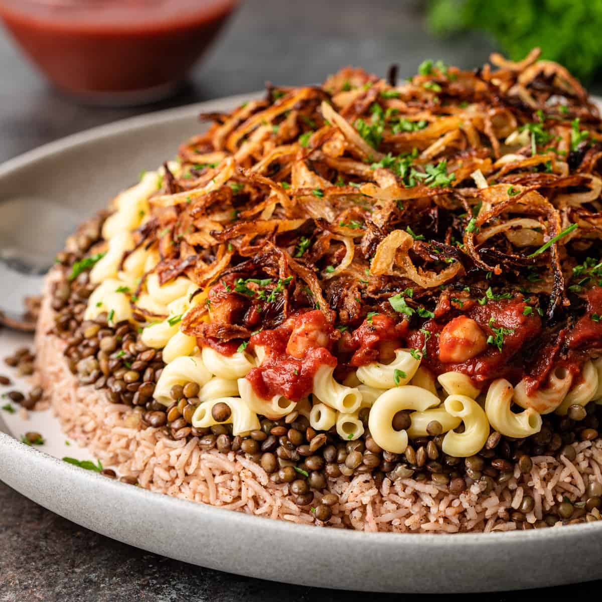
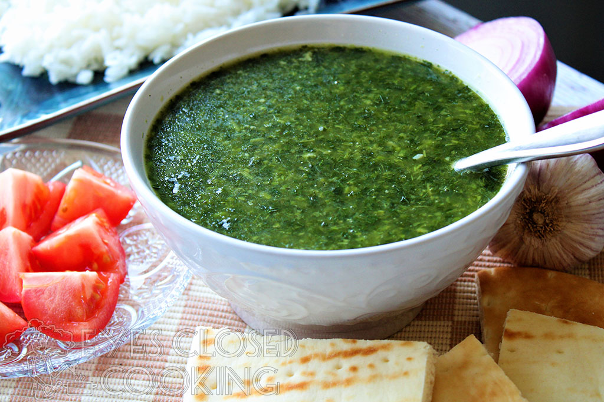

Koshari (Arabic: كشري) is a popular Egyptian dish made from rice, lentils, and pasta, topped with a spicy tomato sauce and crispy fried onions.
Ful w Ta3meya (Arabic: فول وطعمية) is a traditional Egyptian breakfast dish made from fava beans and falafel, often served with pita bread and salad.

Molokhia (Arabic: ملوخية) is a green soup made from the leaves of the jute plant, often served with rice and chicken or rabbit.
